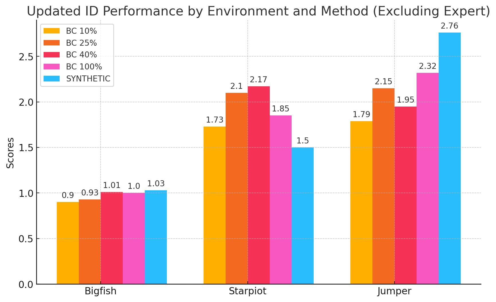
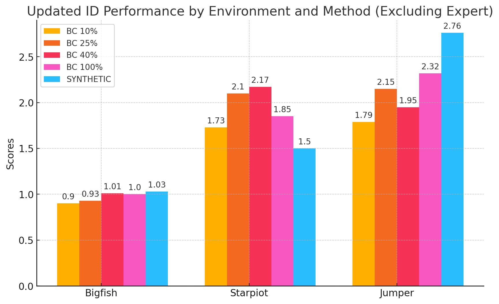
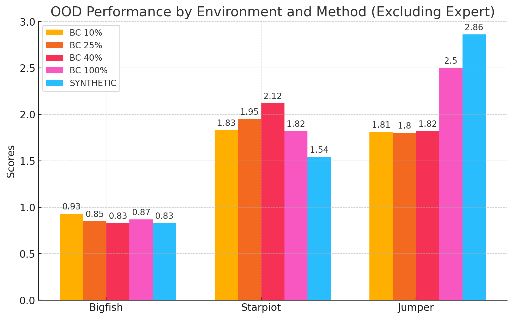

ID performance
In distribution performance of various data collection methods.
Offline reinforcement learning often requires a quality dataset that we can train a policy on. However, in many situations, it is not possible to get such a dataset, nor is it easy to train a policy to perform well in the actual environment given the offline data. We propose using data distillation to train and distill a better dataset which can then be used for training a better policy model. We show that our method is able to synthesize a dataset where a model trained on it achieves similar performance to a model trained on the full dataset or a model trained using percentile behavioral cloning.
On the left we train the dataset by taking the matching gradient loss between the real offline dataset and our synthetic dataset. On the right we then use the trained synthetic dataset to train a RL model, which we then evaluate on the real environment.
In distribution performance of various data collection methods.
Out of distribution performance of various data collection methods
@misc{light2024datasetdistillationofflinereinforcement,
title={Dataset Distillation for Offline Reinforcement Learning},
author={Jonathan Light and Yuanzhe Liu and Ziniu Hu},
year={2024},
eprint={2407.20299},
archivePrefix={arXiv},
primaryClass={cs.LG},
url={https://arxiv.org/abs/2407.20299},
}